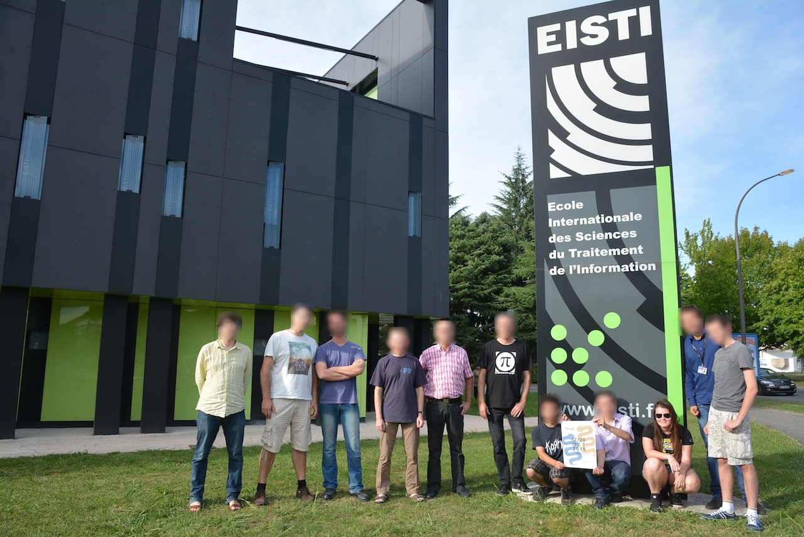
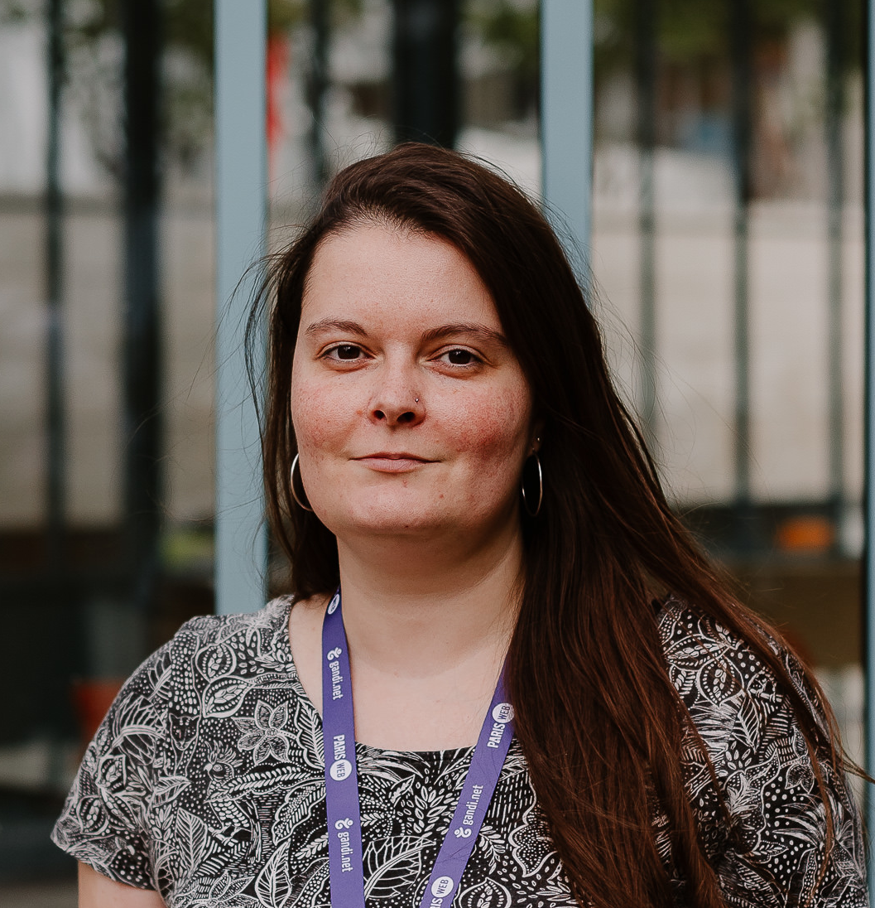
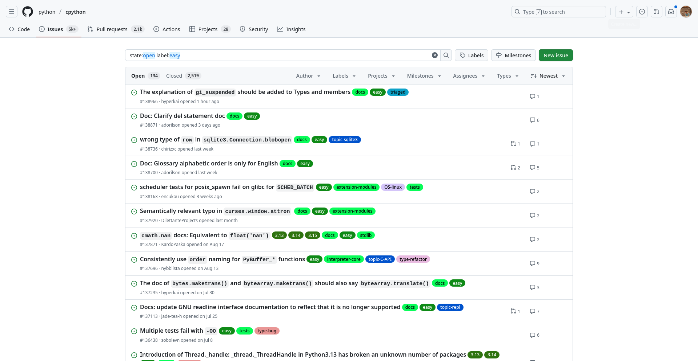

Logiciel libre : participer, partager et créer
Lucie Anglade − Paris Web − Septembre 2025

2 mois avant ma première contribution au Logiciel Libre, et je ne savais même pas ce que c’était

- Ingénieure en informatique 👩🏻💻
- Développe des logiciels libres en Python
- Présidente de l’AFPy 🐍
C’est quoi un logiciel libre ?
Pourquoi je voudrais participer ?
Plusieurs raisons
- améliorer un logiciel que j’utilise,
- apprendre des choses sur des outils,
- apprendre à communiquer,
- rencontrer d’autres personnes.
Qu’est ce que je peux faire ?
J’aime bien écrire du code 👩💻
- ajouter des fonctionnalités,
- corriger des problèmes.
Bon d’accord, mais si je casse un truc… 😱
Peu de risques de casser des trucs
- ajouter des tests,
- reproduire des problèmes.
En fait, le code là comme ça… ça m’intéresse pas trop.
Moins côté code 🌈
- améliorer l’interface du logiciel,
- aider les gens à utiliser le logiciel,
- améliorer la documentation.
Non mais en fait, ce qui m’intéresse, c’est rencontrer les gens.
J’aime rencontrer les gens 🥳
- participer à des évènements,
- organiser des évènements.
Comment je peux me lancer ?
Pour le côté développement 👩💻
- regarder si il y a un guide de contribution,
Pour le côté développement 👩💻
- regarder si il y a un guide de contribution,
- jeter un œil sur les tickets pour trouver les « good first issue »,

Tickets avec le label « easy » sur Python
Pour le côté développement 👩💻
- regarder si il y a un guide de contribution,
- jeter un œil sur les tickets pour trouver les « good first issue »,
- poser des questions aux mainteneur·euses.
Il n’y a pas besoin de faire une énorme contribution pour participer.
Pour le côté rencontres 👋
- trouver des évènements existants (conférences, meetups…),
- se rapprocher de groupes d’utilisateurices, d’organisations et d’associations,
Pour le côté rencontres 👋
- trouver des évènements existants (conférences, meetups…),
- se rapprocher de groupes d’utilisateurices, d’organisations et d’associations,
- trouver un lieu super sympa pour organiser votre premier meetup !
2 mois avant ma première contribution au Logiciel Libre, et je ne savais même pas ce que c’était
Et sinon, vous pouvez aussi créer votre propre logiciel libre !
pour ensuite vivre du logiciel libre, mais c’est une autre histoire